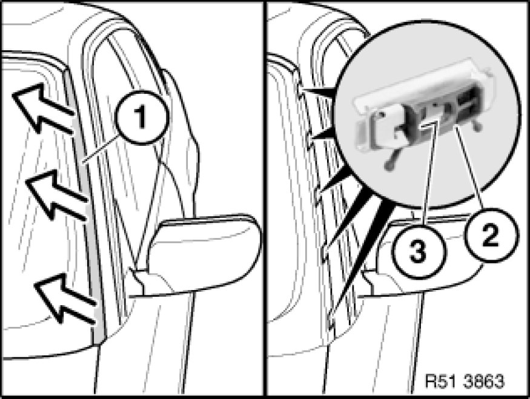

Windshield Moulding / Trim: Service and Repair
51 31 030 - Removing and installing or replacing left or right gutter strip along windscreen

Unclip gutter strip (1) towards top.
Important!
Replace clips (2) after each removal.
Note part number.
Installation Note:
Locks (3) of clips (2) must not be damaged.
Gutter strip (1) must not be damaged, replace if necessary.